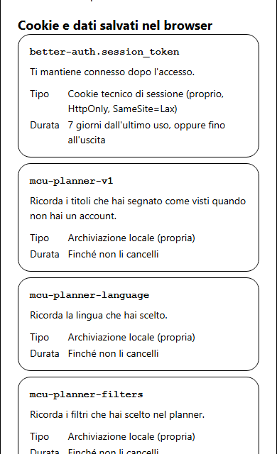
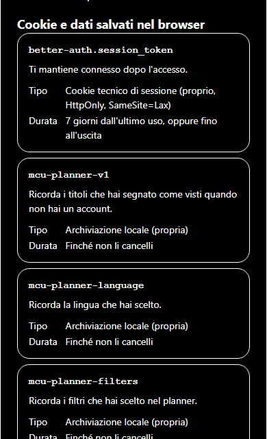
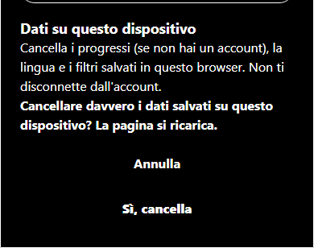
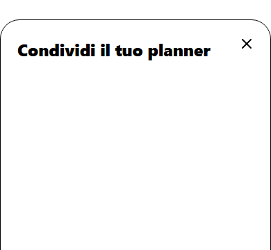
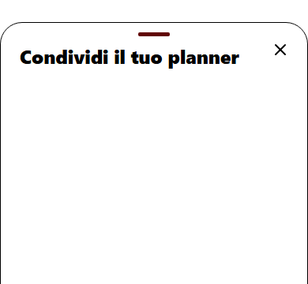

Modal, dialog di conferma, condivisione, importazione e impostazioni privacy.
<dialog> nativo (useDialog) con sfondo scuro (::backdrop), angoli --r-xl, ombra livello 2 (--shadow-pop). Misure: md 35rem (560px), lg 45rem (720px, trailer), profile senza intestazione (vedi Profile Popup). Intestazione con titolo h2 a --fs-h4; il pulsante di chiusura è fisso, ultimo nell'ordine del focus. Esc e clic sullo sfondo chiudono. Sotto 40em è un foglio dal basso: raggio solo in alto, maniglia, larghezza piena, trascinabile (useSheetDrag).
Titolo e messaggio, due azioni a destra: “Annulla” (soft, ha il focus iniziale) e la conferma. Larghezza massima 30rem. Con tone compare l'icona tonda da 40px (warning oro, danger rosso). Con requiredText la conferma resta aria-disabled finché non si scrive la parola. In corso: pulsante in caricamento e Annulla disabilitato; Esc ignorato. Errore: riga rossa con icona 18px. Sotto 40em le azioni vanno in colonna a tutta larghezza.
Titolo share.title. Senza accesso: invito ad accedere (apre il popup di accesso). Con accesso: introduzione, link con copia, scadenza, QR (generato dal codice, 256px, fondo bianco), immagine da scaricare o condividere (il tasto “Condividi” compare solo se il browser condivide file), durata (Select nativo) e creazione, rigenerazione o disattivazione. Il link vecchio smette di funzionare quando si rigenera.
Si apre dal link condiviso. Anteprima con avanzamento (ProgressMeter), scelta “Unisci i due planner” (primario, con targhetta “Consigliato”) o “Sostituisci il mio planner” (soft: se si perdono titoli chiede una seconda conferma con “Sì, sostituisci” pericolo e “Indietro”; se non se ne perde nessuno resta una sola scelta), note per chi non ha un account. Link non valido e errore di caricamento usano StateBox “dialog” con l'illustrazione err-shared (112px: valore senza token). Nell'errore di caricamento “Riprova” non smonta il riquadro: il pulsante va in attesa (isLoading, testo common.loading, da isRetrying di useSharedPlanner), “Chiudi” resta attivo e a ogni nuovo tentativo il riquadro si rimonta (key={state.attempt}, role="alert").
Senza banner di consenso: spiega che cosa si salva sul dispositivo (tabella storage-table) e permette di cancellare i dati locali. La cancellazione chiede conferma nello stesso popup (privacy-confirm), poi ricarica la pagina.
<dialog> in portale (document.body); il focus iniziale è sul titolo (Modal) o su “Annulla” (ConfirmDialog).ConfirmDialog.tsx).DELETE; il reset del planner e la modalità manutenzione usano la forma semplice e quella “warning” (DeleteAccountSection.tsx, Planner.tsx, MaintenanceSection.tsx).lg (TrailerButton.tsx).| Chiave | it | en | fr | es | de |
|---|---|---|---|---|---|
share.title | Condividi il tuo planner | Share your planner | Partagez votre planner | Comparte tu planner | Teile deinen Planner |
share.intro | Chi ha il link vede il tuo nome da supereroe e i titoli che hai visto. Nient'altro. | Anyone with the link sees your hero name and the titles you've watched. Nothing else. | Toute personne ayant le lien voit votre nom de super-héros et les titres que vous avez vus. Rien d'autre. | Quien tenga el enlace ve tu nombre de superhéroe y los títulos que has visto. Nada más. | Wer den Link hat, sieht deinen Superheldennamen und die Titel, die du gesehen hast. Sonst nichts. |
share.create | Crea link | Create link | Créer le lien | Crear enlace | Link erstellen |
share.regenerate | Rigenera link | Regenerate link | Régénérer le lien | Regenerar enlace | Link neu erstellen |
share.regenerateHint | Il link precedente smette di funzionare. | The previous link stops working. | Le lien précédent cesse de fonctionner. | El enlace anterior deja de funcionar. | Der vorherige Link funktioniert nicht mehr. |
share.disable | Disattiva link | Turn off link | Désactiver le lien | Desactivar enlace | Link deaktivieren |
share.copy | Copia link | Copy link | Copier le lien | Copiar enlace | Link kopieren |
share.expires | Scade il …. | Expires on …. | Expire le …. | Caduca el …. | Läuft am … ab. |
share.loginRequired | Accedi per condividere il tuo planner. | Sign in to share your planner. | Connectez-vous pour partager votre planner. | Inicia sesión para compartir tu planner. | Melde dich an, um deinen Planner zu teilen. |
| Chiave | it | en | fr | es | de |
|---|---|---|---|---|---|
import.title | Planner condiviso | Shared planner | Planner partagé | Planner compartido | Geteilter Planner |
import.summary | … ha visto N titoli su N (N%). | … has watched N of N titles (N%). | … a vu N titres sur N (N %). | … ha visto N de N títulos (N %). | … hat N von N Titeln gesehen (N %). |
import.heading | Come vuoi usarlo? | How do you want to use it? | Comment voulez-vous l’utiliser ? | ¿Cómo quieres usarlo? | Wie möchtest du ihn verwenden? |
import.recommended | Consigliato | Recommended | Recommandé | Recomendado | Empfohlen |
import.mergeTitle | Unisci i due planner | Merge the two planners | Fusionner les deux planners | Unir los dos planners | Beide Planner zusammenführen |
import.mergeBody | Teniamo i tuoi {current} titoli visti e aggiungiamo i {added} di … che ti mancano. Alla fine ne avrai {result}. | We keep your {current} watched titles and add the {added} from … that you are missing. In the end you will have {result}. | Nous gardons vos {current} titres vus et ajoutons les {added} de … qui vous manquent. Vous en aurez {result} au final. | Mantenemos tus {current} títulos vistos y añadimos los {added} de … que te faltan. Al final tendrás {result}. | Wir behalten deine {current} gesehenen Titel und fügen die {added} von … hinzu, die dir fehlen. Am Ende hast du {result}. |
import.replaceTitle | Sostituisci il mio planner | Replace my planner | Remplacer mon planner | Reemplazar mi planner | Meinen Planner ersetzen |
import.replaceBody | Il tuo planner diventa uguale a quello di …. Perdi i {lost} titoli che hai visto solo tu. | Your planner becomes identical to …'s. You lose the {lost} titles only you have watched. | Votre planner devient identique à celui de …. Vous perdez les {lost} titres que vous seul avez vus. | Tu planner pasa a ser igual al de …. {lost} títulos estrenados que solo has visto tú se quitan. | Dein Planner wird identisch mit dem von …. Die {lost} Titel, die nur du gesehen hast, gehen verloren. |
import.replaceNoLoss | Il tuo planner diventa uguale a quello di …. Non perdi nessun titolo. | Your planner becomes the same as …’s. You lose no titles. | Votre planner devient identique à celui de …. Vous ne perdez aucun titre. | Tu planner pasa a ser igual al de …. No pierdes ningún título. | Dein Planner wird so wie der von …. Du verlierst keinen Titel. |
| Chiave | it | en | fr | es | de |
|---|---|---|---|---|---|
import.replaceAsk | Perdere {lost} titoli visti? | Lose {lost} watched titles? | Perdre {lost} titres vus ? | ¿Perder {lost} títulos vistos? | {lost} gesehene Titel verlieren? |
import.replaceConfirm | Sì, sostituisci | Yes, replace | Oui, remplacer | Sí, sustituir | Ja, ersetzen |
import.back | Indietro | Back | Retour | Atrás | Zurück |
import.close | Non importare | Don't import | Ne pas importer | No importar | Nicht importieren |
import.anonymousNote | Senza account, il planner importato resta solo su questo dispositivo. | Without an account, the imported planner stays on this device only. | Sans compte, le planner importé reste uniquement sur cet appareil. | Sin cuenta, el planner importado se queda solo en este dispositivo. | Ohne Konto bleibt der importierte Planner nur auf diesem Gerät. |
import.empty | … non ha ancora segnato nessun titolo. | … hasn't marked any titles yet. | … n'a pas encore marqué de titre. | … aún no ha marcado ningún título. | … hat noch keinen Titel markiert. |
share.invalid.title | Questo ramo è stato potato | This branch was pruned | Ce lien n'est plus valable | Este enlace ya no es válido | Dieser Link ist nicht mehr gültig |
share.invalid.body | Il link è scaduto o non funziona. Chiedi a chi te lo ha mandato di condividerlo di nuovo. | The link has expired or doesn't work. Ask whoever sent it to share it again. | Le lien a expiré ou ne fonctionne pas. Demandez à la personne qui vous l'a envoyé de le partager à nouveau. | El enlace ha caducado o no funciona. Pide a quien te lo envió que lo comparta de nuevo. | Der Link ist abgelaufen oder funktioniert nicht. Bitte die Person, die ihn geschickt hat, ihn erneut zu teilen. |
privacySettings.title | Preferenze privacy | Privacy settings | Préférences de confidentialité | Preferencias de privacidad | Datenschutzeinstellungen |
| Chiave | it | en | fr | es | de |
|---|---|---|---|---|---|
privacySettings.intro | Questo sito non usa cookie di analisi, pubblicità o profilazione e non carica risorse di terze parti, tranne il video del trailer, che viene caricato da YouTube solo se premi “Avvia il trailer”: non c'è nulla da accettare o rifiutare. | This site does not use analytics, advertising or profiling cookies and does not load third-party resources, except the trailer video, which loads from YouTube only if you press “Play the trailer”: there is nothing to accept or refuse. | Ce site n'utilise aucun cookie d'analyse, de publicité ou de profilage et ne charge aucune ressource tierce, à l'exception de la vidéo de la bande-annonce, chargée depuis YouTube uniquement si vous appuyez sur « Lancer la bande-annonce » : il n'y a rien à accepter ni à refuser. | Este sitio no usa cookies de analítica, publicidad ni elaboración de perfiles y no carga recursos de terceros, salvo el vídeo del tráiler, que se carga desde YouTube solo si pulsas «Reproducir el tráiler»: no hay nada que aceptar o rechazar. | Diese Seite verwendet keine Analyse-, Werbe- oder Profiling-Cookies und lädt keine Ressourcen von Dritten, außer dem Trailer-Video, das nur von YouTube geladen wird, wenn du auf „Trailer abspielen“ klickst: Es gibt nichts zu akzeptieren oder abzulehnen. |
privacySettings.clearQuestion | Cancellare davvero i dati salvati su questo dispositivo? | Really delete the data stored on this device? | Supprimer vraiment les données enregistrées sur cet appareil ? | ¿Borrar de verdad los datos guardados en este dispositivo? | Die auf diesem Gerät gespeicherten Daten wirklich löschen? |
privacySettings.clearConfirm | Sì, cancella | Yes, delete | Oui, supprimer | Sí, borrar | Ja, löschen |
planner.reset.title | Azzerare tutti i progressi? | Reset all progress? | Réinitialiser toute la progression ? | ¿Restablecer todo el progreso? | Gesamten Fortschritt zurücksetzen? |
planner.reset.message | Tutti i titoli tornano da vedere. Non si può annullare. | Every title goes back to unwatched. This can't be undone. | Tous les titres redeviennent à voir. Impossible d'annuler. | Todos los títulos vuelven a estar por ver. No se puede deshacer. | Alle Titel gelten wieder als ungesehen. Das lässt sich nicht rückgängig machen. |
planner.reset.confirm | Azzera | Reset | Réinitialiser | Restablecer | Zurücksetzen |
admin.maintenance.confirmTitle | Attivare la manutenzione? | Turn on maintenance? | Activer la maintenance ? | ¿Activar el mantenimiento? | Wartungsmodus aktivieren? |
admin.maintenance.confirmMessage | Gli altri utenti vedranno solo una pagina di avviso (errore 503). | Other users will see only a notice page (error 503). | Les autres utilisateurs ne verront qu'une page d'avis (erreur 503). | Los demás usuarios solo verán una página de aviso (error 503). | Andere Nutzer sehen nur eine Hinweisseite (Fehler 503). |
| Selettore | Valori nel codice |
|---|---|
.dialog::backdrop | background: var(--scrim) r.18 |
.dialog | --field-bg: var(--bg) r.5width: 100% r.6max-width: min(35rem, calc(100vw - 32px)) r.7max-height: calc(100dvh - 64px) r.8padding: 0 r.9border: 0 r.10border-radius: var(--r-xl) r.11background: var(--surface) r.12color: var(--ink) r.13box-shadow: var(--shadow-pop) r.14overflow: hidden r.15 |
.dialog--lg | max-width: min(45rem, calc(100vw - 32px)) r.23 |
.dialog__scroll > .dialog__header | flex: none r.33 |
.dialog__scroll > .dialog__body | flex: 1 r.37min-height: 0 r.38overflow: hidden auto r.41overscroll-behavior: contain r.42scrollbar-gutter: auto r.43 |
.dialog__scroll | display: flex r.28flex-direction: column r.29max-height: calc(100dvh - 64px) r.30 |
.dialog__header h2 | font-size: var(--fs-h4) r.53font-weight: 800 r.54line-height: 1.2 r.55overflow-wrap: anywhere r.56 |
.dialog__header | position: relative r.48padding: 1.75rem calc(var(--tap) + 0.75rem + var(--sp-3)) 0.5rem 2rem r.50 |
.dialog__close:active@media (prefers-reduced-motion: no-preference) | transform: scale(0.94) r.82transition-duration: var(--dur-press) r.83 |
.dialog__close svg | flex: none r.88width: 20px r.89height: 20px r.90stroke-width: 2.4 r.91stroke-linecap: round r.92stroke-linejoin: round r.93 |
.dialog__close | position: absolute r.61top: 12px r.62right: 12px r.63z-index: 1 r.64flex: none r.65display: flex r.66align-items: center r.67justify-content: center r.68width: var(--hit) r.69height: var(--hit) r.70.pill() r.71background: var(--bg) r.72color: var(--ink) r.73.tones(var(--row-hover), var(--row-press)) r.75transition: background-color var(--dur-hover) var(--ease-out), transform var(--dur-hover) var(--ease-out) r.76 |
.dialog__body h3, .dialog__body h4, .dialog__body h5 | font-size: var(--fs-title) r.106font-weight: 700 r.107line-height: 1.3 r.108 |
.dialog__body | display: flex r.98flex-direction: column r.99gap: 1.25rem r.100padding: 0.5rem 2rem 2rem r.101 |
dialog.dialog@media (max-width: 39.9375em) | width: 100% r.114max-width: 100% r.115margin: auto 0 0 r.116border-radius: var(--r-lg) var(--r-lg) 0 0 r.117max-height: calc(var(--viewport-height, 100dvh) - var(--sheet-gap)) r.118 |
.dialog__scroll@media (max-width: 39.9375em) | max-height: calc(var(--viewport-height, 100dvh) - var(--sheet-gap)) r.122 |
.dialog__header::before@media (max-width: 39.9375em) | content: "" r.129position: absolute r.130top: 12px r.131left: calc(50% - 20px) r.132width: 40px r.133height: 5px r.134border-radius: var(--r-hair) r.135background: var(--disabled) r.136 |
.dialog__header@media (max-width: 39.9375em) | padding: 1.75rem calc(var(--tap) + 0.75rem + var(--sp-3)) 0.5rem 1.5rem r.126 |
.dialog__body@media (max-width: 39.9375em) | padding: 0.5rem 1.5rem calc(1.5rem + env(safe-area-inset-bottom, 0px)) r.141 |
Fonte: src/components/ui/Modal/Modal.less (commit da53154), righe indicate come r.N.
| Selettore | Valori nel codice |
|---|---|
.dialog--confirm .dialog__body | padding-top: 1.5rem r.7 |
.dialog--confirm h2 | font-size: var(--fs-h4) r.11font-weight: 800 r.12line-height: 1.2 r.13 |
.dialog--confirm | max-width: min(30rem, calc(100vw - 16px)) r.4 |
.dialog__actions | display: flex r.18flex-wrap: wrap r.19justify-content: flex-end r.20gap: 0.5rem r.21 |
.dialog__head h2 | min-width: 0 r.30overflow-wrap: anywhere r.31 |
.dialog__head | display: flex r.25align-items: center r.26gap: var(--sp-3) r.27 |
.dialog__icon svg | width: 20px r.45height: 20px r.46stroke-width: 2.2 r.47 |
.dialog__icon | flex: none r.36display: flex r.37align-items: center r.38justify-content: center r.39width: 40px r.40height: 40px r.41.pill() r.42 |
.dialog__icon--warning | background: var(--highlight) r.52color: var(--ink-static) r.53 |
.dialog__icon--danger | background: var(--danger) r.57color: var(--on-danger) r.58 |
.dialog__error svg | flex: none r.70width: 18px r.71height: 18px r.72stroke-width: 2.4 r.73 |
.dialog__error | display: flex r.62align-items: center r.63gap: var(--sp-2) r.64font-size: var(--fs-label) r.65font-weight: 700 r.66color: var(--danger) r.67 |
.dialog__actions .btn@media (max-width: 39.9375em) | width: 100% r.83 |
.dialog__actions@media (max-width: 39.9375em) | flex-direction: column r.79flex-wrap: nowrap r.80 |
Fonte: src/components/ui/ConfirmDialog/ConfirmDialog.less (commit 15b984b), righe indicate come r.N.
| Selettore | Valori nel codice |
|---|---|
.share-link | display: flex r.4flex-direction: column r.5gap: 0.5rem r.6 |
.share-qr | align-self: center r.10border-radius: @radius-sub r.11background: var(--white) r.12 |
.share-image | display: flex r.16flex-direction: column r.17align-items: flex-start r.18gap: 0.5rem r.19 |
Fonte: src/features/share/components/ShareDialog/ShareDialog.less (commit 7c7eb6a), righe indicate come r.N.
| Selettore | Valori nel codice |
|---|---|
.import-preview | display: flex r.4flex-direction: column r.5gap: 1rem r.6 |
.import-preview__recommended | margin: 0 r.10 |
.import-preview__badge | display: inline-block r.14padding: 2px 10px r.15border-radius: var(--r-pill) r.16background: var(--primary) r.17color: var(--on-primary) r.18font-size: var(--fs-caption) r.19font-weight: 800 r.20 |
.import-preview__choice | display: flex r.24flex-direction: column r.25gap: 0.5rem r.26padding: 1rem 1.25rem r.27border-radius: @radius-row r.28background: var(--bg) r.29 |
Fonte: src/features/share/components/ImportSharedDialog/ImportSharedDialog.less (commit 7c7eb6a), righe indicate come r.N.
| Selettore | Valori nel codice |
|---|---|
.privacy-section p | margin: 0 r.9 |
.privacy-section | display: flex r.4flex-direction: column r.5gap: var(--sp-3) r.6 |
.privacy-section + .privacy-section | margin-top: var(--sp-2) r.14 |
.privacy-confirm p | margin: 0 r.23 |
.privacy-confirm | display: flex r.18flex-direction: column r.19gap: var(--sp-3) r.20 |
Fonte: src/features/privacy/components/PrivacySettingsDialog/PrivacySettingsDialog.less (commit 44389a1), righe indicate come r.N.
| Selettore | Valori nel codice |
|---|---|
.storage-list | display: flex r.2flex-direction: column r.3gap: var(--sp-2) r.4margin: 0 r.5padding: 0 r.6list-style: none r.7 |
.storage-card p | margin: 0 r.22 |
.storage-card dl | display: grid r.26grid-template-columns: auto 1fr r.27gap: 2px var(--sp-3) r.28margin: var(--sp-1) 0 0 r.29color: var(--ink-2) r.30 |
.storage-card dl > div | display: contents r.34 |
.storage-card dd | margin: 0 r.38 |
.storage-card | display: flex r.11flex-direction: column r.12gap: var(--sp-1h) r.13padding: var(--sp-3h) var(--sp-4) r.14border: 1px solid transparent r.16border-radius: var(--r-sm) r.17background: var(--row) r.18font-size: var(--fs-label) r.19 |
.storage-card__name | font-weight: 700 r.43overflow-wrap: break-word r.44 |
Fonte: src/features/privacy/components/StorageTable/StorageTable.less (commit 44389a1), righe indicate come r.N.
Che cosa è cambiato rispetto alla pagina precedente del canvas.
| Cosa | Prima (canvas vecchio) | Dopo (codice) | File |
|---|---|---|---|
| Pagina Popup | dialog descritti con valori propri | sostituita: una sola pagina con tutti i dialog del codice | Modal.less, ConfirmDialog.less |
| Vuoti e condivisi | link non valido e errore di caricamento | assorbiti qui (StateBox “dialog”, err-shared 112px) | ImportSharedDialog.tsx |
| Ombra del popup | varie | livello 2 (--shadow-pop) | Modal.less |
| Pulsanti e campi | ridefiniti | usati dalle pagine Buttons e Textfield | Button.tsx, Field.tsx |
Confermato nel codice 2b5e07a: la frase descrittiva sotto il pulsante è stata tolta e la conferma dice solo admin.maintenance.confirmMessage. Le demo “con tono” di questa pagina usano già il testo attuale.
| Chiave | it | en | fr | es | de |
|---|---|---|---|---|---|
admin.maintenance.confirmTitle | Attivare la manutenzione? | Turn on maintenance? | Activer la maintenance ? | ¿Activar el mantenimiento? | Wartungsmodus aktivieren? |
admin.maintenance.confirmMessage | Gli altri utenti vedranno solo una pagina di avviso (errore 503). | Other users will see only a notice page (error 503). | Les autres utilisateurs ne verront qu'une page d'avis (erreur 503). | Los demás usuarios solo verán una página de aviso (error 503). | Andere Nutzer sehen nur eine Hinweisseite (Fehler 503). |
Oggi Modal mostra sempre la X (.dialog__close, Modal.tsx) e molti popup hanno in più un pulsante “Chiudi” o “Non importare”: due comandi per la stessa cosa. Regola unica: un solo modo visibile per chiudere. (1) Popup di contenuto o compito (condivisione, profilo, accesso, privacy, trailer): c'è la X e non c'è un pulsante “Chiudi”. (2) Popup di decisione o con azioni proprie (conferma, anteprima di importazione, errore con Riprova): non c'è la X, l'uscita è il pulsante testuale (“Annulla”, “Non importare”, “Chiudi”) accanto alle azioni. Esc e clic sullo sfondo chiudono sempre, tranne mentre una richiesta è in corso. Nel foglio mobile la maniglia di trascinamento resta nei popup costruiti con Modal (contenuto e decisioni); corretto (voce 26): le conferme (ConfirmDialog) non hanno testata, quindi né maniglia né gesto. Regola: la maniglia c'è se e solo se il foglio si trascina. Implementazione: Modal riceve showClose (default true); i popup di decisione passano false.
| Popup | Prima | Dopo | File |
|---|---|---|---|
| Conferma (reset planner, manutenzione, elimina account) | no X · “Annulla” (soft) + conferma | decisione: scelta tra due azioni | ConfirmDialog.tsx (nessun .dialog__close) |
| Condivisione | X | contenuto: si chiude con la X, nessun “Chiudi” in fondo | Modal.tsx; ShareDialog.tsx |
| Importazione, anteprima | X + “Non importare” | decisione: no X, resta “Non importare” | ImportSharedDialog.tsx |
| Importazione, link non valido o errore di caricamento | X + “Chiudi” (+ “Riprova”) | messaggio con azioni: no X, “Chiudi” resta | ImportSharedDialog.tsx; StateBox |
| Profilo | X | contenuto: X | ProfilePopup (Profile Popup) |
| Accesso e registrazione | X | compito: X | AuthDialog |
| Impostazioni privacy | X | contenuto: X; la conferma di cancellazione è nella pagina, non un secondo popup | PrivacySettingsDialog.tsx |
| Trailer | X | contenuto: X | TrailerButton.tsx |
| Menu mobile | X nella barra del pannello | invariato (è un pannello, non un popup) | HeaderMenu.tsx r.100 |
Per ogni voce: com'era nel codice 2b5e07a (prima), che cosa decide questa pagina (dopo), file da toccare.
| Cosa | Prima | Dopo | File |
|---|---|---|---|
| Regola della X | sempre presente in Modal | showClose; X solo nei popup di contenuto o compito | Modal.tsx |
| Pulsante “Chiudi” nei popup di contenuto | presente in alcuni | tolto | ShareDialog.tsx; PrivacySettingsDialog.tsx |
| Popup di decisione | X e “Annulla” insieme | solo il pulsante testuale | Modal.tsx; ConfirmDialog.tsx; ImportSharedDialog.tsx |
Prima: due blocchi simili (“Unisci”, “Sostituisci”), numeri senza spiegazione (“titoli che verrebbero aggiunti”), avviso e conferma in due punti diversi, un “Non importare” che sembra un terzo esito. Dopo: (1) riepilogo del planner condiviso con la barra; (2) una domanda sola, “Come vuoi usarlo?”; (3) due scelte con la conseguenza in numeri (quanti titoli restano, quanti si aggiungono, quanti si perdono); (4) “Unisci” è l'azione primaria, evidenziata come “Consigliato” perché non toglie nulla; (5) “Sostituisci” è soft e, se fa perdere titoli, apre un secondo passo nello stesso popup con avviso e “Sì, sostituisci” in rosso; (6) sotto, “Non importare” come unica uscita (niente X: regola dei popup di decisione). Senza account il testo import.anonymousNote resta sotto. I numeri sono valori d'esempio.
import.replaceNoLoss): “Sostituisci” non chiede conferma| Chiave | it | en | fr | es | de |
|---|---|---|---|---|---|
import.heading | Come vuoi usarlo? | How do you want to use it? | Comment voulez-vous l’utiliser ? | ¿Cómo quieres usarlo? | Wie möchtest du ihn verwenden? |
import.recommended | Consigliato | Recommended | Recommandé | Recomendado | Empfohlen |
import.mergeTitle | Unisci i due planner | Merge the two planners | Fusionner les deux planners | Unir los dos planners | Beide Planner zusammenführen |
import.mergeBody | Teniamo i tuoi {current} titoli visti e aggiungiamo i {added} di {name} che ti mancano. Alla fine ne avrai {result}. | We keep your {current} watched titles and add the {added} from {name} that you are missing. In the end you will have {result}. | Nous gardons vos {current} titres vus et ajoutons les {added} de {name} qui vous manquent. Vous en aurez {result} au final. | Mantenemos tus {current} títulos vistos y añadimos los {added} de {name} que te faltan. Al final tendrás {result}. | Wir behalten deine {current} gesehenen Titel und fügen die {added} von {name} hinzu, die dir fehlen. Am Ende hast du {result}. |
import.replaceTitle | Sostituisci il mio planner | Replace my planner | Remplacer mon planner | Reemplazar mi planner | Meinen Planner ersetzen |
import.replaceBody | Il tuo planner diventa uguale a quello di {name}. Perdi i {lost} titoli che hai visto solo tu. | Your planner becomes identical to {name}'s. You lose the {lost} titles only you have watched. | Votre planner devient identique à celui de {name}. Vous perdez les {lost} titres que vous seul avez vus. | Tu planner pasa a ser igual al de {name}. {lost} títulos estrenados que solo has visto tú se quitan. | Dein Planner wird identisch mit dem von {name}. Die {lost} Titel, die nur du gesehen hast, gehen verloren. |
import.replaceNoLoss | Il tuo planner diventa uguale a quello di {name}. Non perdi nessun titolo. | Your planner becomes the same as {name}’s. You lose no titles. | Votre planner devient identique à celui de {name}. Vous ne perdez aucun titre. | Tu planner pasa a ser igual al de {name}. No pierdes ningún título. | Dein Planner wird so wie der von {name}. Du verlierst keinen Titel. |
import.replaceAsk | Perdere {lost} titoli visti? | Lose {lost} watched titles? | Perdre {lost} titres vus ? | ¿Perder {lost} títulos vistos? | {lost} gesehene Titel verlieren? |
import.replaceConfirm (invariato) | Sì, sostituisci | Yes, replace | Oui, remplacer | Sí, sustituir | Ja, ersetzen |
import.back | Indietro | Back | Retour | Atrás | Zurück |
Per ogni voce: com'era nel codice 2b5e07a (prima), che cosa decide questa pagina (dopo), file da toccare.
| Cosa | Prima | Dopo | File |
|---|---|---|---|
| Struttura | due blocchi + avviso | riepilogo, domanda, due scelte con numeri, conferma nel secondo passo | ImportSharedDialog.tsx; ImportSharedDialog.less |
| “Unisci” | primario senza spiegazione di cosa accade | primario “Consigliato”: tiene {current}, aggiunge {added}, totale {result} | import.mergeHint → import.mergeBody |
| “Sostituisci” | soft, avviso a parte | soft; con perdita apre conferma; senza perdita nessuna conferma | import.replaceWarning → import.replaceAsk |
| Uscita | X e “Non importare” | solo “Non importare” (nessuna X) | Modal.tsx |
Riferimento: main 3dfc873 più la modifica non ancora su main (scrollbar-gutter: auto in Modal.less, nella cartella di lavoro design-suite-architecture-41e77f, non committata). Misurato nel browser (Chromium) con il CSS del canvas e i font veri; le etichette nere sotto i riquadri sono misure prese dalla pagina quando si apre. Gli esempi usano il popup «Suggerisci una modifica» (campo, contatore e «Invia» sono l'esempio del committente). Nessun testo nuovo.
(a) Titolo e X: come oggi. La premessa va corretta: la X non scorre, è fratella di .dialog__scroll, fissa a 12 px da sopra e da destra (Modal.tsx r.209-219, Modal.less r.46-52, misurata 44 × 44 px); scorre solo il titolo, insieme al corpo. Raccomandazione: lasciare che scorra anche il titolo. Un popup scorre solo con la finestra bassa (tetto calc(100dvh − 64px), Modal.less r.8 e r.27: 736 px con 800 px di finestra) e i popup con campi sono bassi (Suggerisci: 350 px, misurato); fissare il titolo costa una struttura nuova in Modal.tsx (testata fuori da .dialog__scroll), un filo --line fisso sotto il titolo (nessun token di ombra per una testata) e 65 px in meno di corpo proprio quando manca spazio. Alternativa (a), disegnata: titolo e X fissi, scorre solo il corpo; la barra parte sotto la testata e non attraversa più l'angolo da 32 px in alto. «Barra sul solo corpo con il margine del popup intorno» non si ottiene uguale in tutti i browser: la barra sta sul bordo del contenitore che scorre (solo Chromium accetta un margine su ::-webkit-scrollbar-track, Firefox no: lo stesso limite della voce 21); l'unico modo è un contenitore con margine, che restringe il testo di 12-16 px sempre.
(b) scrollbar-gutter: auto: confermato (Modal.less r.26-31, non ancora su main). Misurato: con stable (ereditato da .scroll-y, base.less r.56-61) il corpo ha 32 px a sinistra e 44 px a destra anche senza scorrimento; con auto 32 e 32. Quando il popup scorre davvero la barra (12 px) occupa la fascia a destra: 32 px dal contenuto alla barra, 44 dal bordo del popup. È la simmetria giusta (il contenuto ha lo stesso respiro dai suoi due lati) e il salto di 12 px compare solo se serve. Alternativa stable both-edges: 44 e 44 sempre, corpo più stretto di 24 px: scartata. Non verificato: .sheet-surface() (FiltersSheet, HeaderMenu: mixins.less r.78) ha ancora stable: stesso effetto di 12 px a destra, da guardare.
(c) Padding: invariato. Corpo 0.5rem 2rem 2rem (Modal.less r.83-87), sotto 40em 0.5rem 1.5rem calc(1.5rem + safe-area) (r.126-128); testata con 1.75rem sopra, 2 rem (1,5 rem) a sinistra e --tap + 0.75rem + --sp-3 (68 px) a destra per la X (r.33-37, r.111-113). Misurato: barra assente 32/32 (24/24); barra presente 32 dal contenuto alla barra (24); X a 12 px dal bordo; titolo a 68 px dal bordo destro (80 con la barra). Larghezza utile del corpo con --md (560 px): 496 px senza barra, 484 con (calcolo). I valori coincidono con --sp-8, --sp-6 e --pad-popup (1,75 rem): scriverli coi token è facoltativo, stesso risultato. Telefono: col tocco la barra è overlay (la regola ::-webkit-scrollbar vale solo con (hover: hover) and (pointer: fine), base.less r.11): niente fascia, 24/24 sempre; la barra da 12 px si vede solo in una finestra stretta con il mouse (disegnata).
(d) Pulsante principale: una regola sola, in fondo. Oggi (misurato a 1280 e a 390 px): accesso, registrazione, recupero, nuova password, Condividi, Importa, completamento 100%: a tutta larghezza, lg; Suggerisci «Invia»: a destra, piccolo (.dialog__actions, justify-content: flex-end); conferme (ConfirmDialog) e Admin: coppia a destra; Account · Profilo «Salva»: a sinistra; Account · Password «Cambia»: a destra, nota a sinistra. Regola: (1) popup con modulo o una sola azione: pulsante principale lg a tutta larghezza, ultimo nel corpo; (2) popup di decisione con due azioni: .dialog__actions a destra, la secondaria a sinistra della principale, che è sempre l'ultima (a destra, in basso quando va in colonna; la colonna sotto 40em oggi vale solo per .dialog--confirm, ConfirmDialog.less r.78-85: estenderla a ogni .dialog__actions); (3) sezioni dell'Account: azione a destra, stato o nota a sinistra (come Password). Cambiano solo due punti: Suggerisci (da .dialog__actions a Button size="lg" a tutta larghezza) e Profilo (stato a sinistra, «Salva» a destra). Alternative: tutto a destra, accesso compreso (scartata: cambia sette popup e rimpicciolisce il bersaglio sul telefono); tutto a tutta larghezza, conferme comprese (scartata: perde la coppia Annulla / Conferma).
1: com'era (32 / 44 px, la barra è riservata anche se non serve); 2 e 3: con auto. Il riquadro 3 scorre perché il contenuto supera il tetto di altezza.
Chiaro e scuro. Il corpo scorre sotto un filo --line da 1 px; la barra parte sotto la testata. Non raccomandata (vedi sopra): vuole una testata fuori da .dialog__scroll.
Bottom sheet, padding 24 px. Su un telefono vero la barra è overlay e non occupa spazio; i due riquadri a destra mostrano la barra da 12 px che compare in una finestra stretta usata con il mouse.
Oggi e proposta per i due popup che cambiano. Le etichette nere sotto sono la posizione misurata del pulsante nel corpo.
| Popup | Azione principale | Posizione oggi (misurata) | Regola proposta |
|---|---|---|---|
| Accesso, Registrazione, Recupero, Nuova password | Button primario lg | a tutta larghezza | invariato |
| Condividi · Importa (scelta) · Completamento 100% | Button primario lg | a tutta larghezza (Importa: dentro il riquadro, 50 px per lato) | invariato |
| Suggerisci una modifica | «Invia», dimensione normale | a destra, largo 75 px (.dialog__actions) | a tutta larghezza, lg |
| Conferme (ConfirmDialog) · Admin (Segna verificato, Date) | Annulla + azione | coppia a destra; telefono: colonna a tutta larghezza solo nelle conferme | invariato a destra; colonna sotto 40em per tutti |
| Account · Profilo | «Salva» | a sinistra, stato a destra | a destra, stato a sinistra |
| Account · Password | «Cambia» | a destra, nota a sinistra | invariato |
| Caso (Chromium, barra classica da 12 px come su Windows) | Corpo a sinistra | Corpo a destra (dal bordo del popup) | Barra |
|---|---|---|---|
1280 · prima (stable) · corto | 32 px | 44 px | 12 px riservati |
| 1280 · prima · scorre | 32 px | 44 px | 12 px |
1280 · dopo (auto) · corto | 32 px | 32 px | 0 |
| 1280 · dopo · scorre | 32 px | 44 px (32 dalla barra) | 12 px |
| 390 · prima · corto | 24 px | 36 px | 12 px riservati |
| 390 · dopo · corto / scorre | 24 px | 24 px / 36 px | 0 / 12 px |
| X · titolo · testata | X 44 × 44 px a 12 px da sopra e da destra | titolo a 68 px dal bordo destro (80 con la barra) | testata alta 65 px |
Stato di partenza: main 3dfc873 più la modifica non committata. Il prompt completo è in docs/design/PROMPT_CODE_POPUP_CAMPI.md.
// SuggestForm.tsx: il form diventa una colonna; l'invio non sta più in .dialog__actions
<form className="suggest" …>
…campi…
<Button type="submit" variant="primary" size="lg" icon={<Send aria-hidden />} …>{t("suggest.send")}</Button>
</form>
// SuggestForm.less
.suggest { display: flex; flex-direction: column; gap: var(--sp-4); } // .suggest__context resta com'è
// ConfirmDialog.less r.78-85: la colonna sotto 40em per ogni .dialog__actions
@media (max-width: 39.9375em) {
.dialog__actions { flex-direction: column; flex-wrap: nowrap; .btn { width: 100%; } }
}
// ProfileSection.tsx: lo stato prima del pulsante; .profile-section__actions { justify-content: flex-end }
// Modal.less (già nella cartella di lavoro): .dialog__scroll { scrollbar-gutter: auto; }flex: 1 1 200px).scrollbar-gutter), il pannello dei filtri e il menu (stesso stable di .sheet-surface()), l'Account con stato lungo.Modal.less | scrollbar-gutter: auto in .dialog__scroll (era stable): padding 2 rem / 1,5 rem simmetrico senza scorrimento | voce 22 di HANDOFF §2». La riga della cartella di lavoro («da confermare con Design») si cancella.| Cosa | Prima | Dopo | File |
|---|---|---|---|
| Gutter del popup | stable: 32 / 44 px | auto: 32 / 32 px (barra solo se serve) | Modal.less r.26-31 |
| Titolo e X | titolo scorre, X fissa | invariato (la variante (a) è disegnata, non raccomandata) | Modal.tsx r.193-219 |
| Padding del corpo | 2 rem / 1,5 rem | invariato | Modal.less r.83-87, r.126-128 |
| Suggerisci · Invia | a destra, piccolo | a tutta larghezza, lg | SuggestForm.tsx, SuggestForm.less |
| Profilo · Salva | a sinistra | a destra, stato a sinistra | ProfileSection.tsx / .less |
| Colonna sotto 40em | solo .dialog--confirm | ogni .dialog__actions | ConfirmDialog.less r.78-85 |
Riferimento: codice di main 4bfbea4 (PrivacySettingsDialog, StorageTable, Modal con useSheetDrag), letto con git show: 4bfbea4 non è ancora su main (è nel ramo design-suite-architecture-41e77f). Cornici con il CSS dei .less di oggi e della proposta, i testi dei cinque file di lingua di 4bfbea4, i font veri. Gli iframe mostrano il punto del popup che serve (scorso fino all'elenco o alla cancellazione); nel codice il popup scorre. Non verificato: Safari e Firefox; il disegno in contrasto forzato è un'emulazione di Chromium.
1 · Elenco a schede su tutte le larghezze (raccomandato). Una scheda per voce: il nome in code grassetto, la finalità in corpo normale, sotto due righe con etichetta («Tipo», «Durata») in --ink-2. Il difetto non è solo del telefono: nel popup da 35 rem la colonna del nome vale 75-79 px e ogni nome va su 3-6 righe (misurato, vedi «Misure»), quindi la tabella a quattro colonne non è buona nemmeno su desktop. Una sola struttura e una sola regola, niente punto di rottura. Scartate: (a) tabella da 40 em e schede sotto: due strutture da tenere uguali e la tabella resta stretta sul desktop del popup (il difetto dei nomi); (b) tabella con scorrimento laterale (il tampone di oggi): per le tabelle WCAG 1.4.10 ammette lo scorrimento, ma «Durata» resta fuori vista e per leggere una riga serve scorrere (63 px a 390, 133 a 320); (c) tabella a due colonne (nome + finalità, il resto sotto): sposta il problema, la «durata» è la risposta che interessa a chi cancella; (d) popup lg (45 rem) per fare entrare la tabella: non risolve il telefono.
2 · Ordine dentro la scheda: nome → finalità → tipo → durata. Le colonne di oggi vanno per gerarchia tecnica (Nome, Tipo, Finalità, Durata); chi legge vuole prima sapere a cosa serve. La finalità è la frase della scheda e non ha etichetta (sarebbe l'unica ovvia); «Tipo» e «Durata» sì: sono dati secchi e l'etichetta li rende leggibili da chi non vede il colore e da un lettore di schermo (dl). Etichette e testi sono quelli di cookiePage.columns.* (nessun testo nuovo). Le etichette stanno in una colonna a larghezza automatica (grid-template-columns: auto 1fr), così i due valori si allineano in tutte le lingue (44 px in it, 56 px in es).
3 · Nomi lunghi. Regola: overflow-wrap: break-word (non anywhere), cioè a capo solo dopo il trattino e, solo se un pezzo non entra nella riga, dentro il pezzo. Nella scheda il nome più lungo (mcu-planner-completed-seen, 26 caratteri) è largo 200 px e la scheda ha 228 px utili a 320 px: non si spezza mai a 100 %; con il testo al 200 % su 320 px si spezza dopo il trattino (al massimo 4 righe) e non esce dal riquadro. anywhere è la causa dei «languag/e» di oggi: conta le parti minime nel calcolo della larghezza della colonna.
4 · Una sola introduzione, un solo titolo per l'elenco. Oggi il popup dice tre volte che non c'è niente da accettare: il paragrafo in apertura (privacySettings.intro), la sezione «Nessun consenso da dare» e «Come gestirli» (che manda a «Preferenze privacy» da dentro «Preferenze privacy»). Proposta: tre sezioni, tutte con h3: (1) Nessun consenso da dare con un solo paragrafo, (2) Cookie e dati salvati nel browser, titolo dell'elenco (è cookiePage.tableCaption, che oggi fa la didascalia della tabella; la frase «Questa pagina elenca tutto…» sparisce: diceva «pagina» in un popup ed era un h3 che ripeteva il titolo), (3) Dati su questo dispositivo, che assorbe «Come gestirli». L'elenco resta legato al titolo con aria-labelledby: l'elenco è letto come «Cookie e dati salvati nel browser, elenco di 10 voci». Il paragrafo di (1) è la fusione di intro e noBannerBody riscritta con scrittura-ux (59 parole in it contro 107, vedi «Testi»).
5 · Cancellazione: due stati, stessi due pulsanti dei conferma degli altri popup. Stato a riposo: il pulsante soft con Trash2, dentro .dialog__actions (a destra su desktop; a tutta larghezza sotto 40 em, come in ogni popup, ConfirmDialog.less r.78-85): il testo è lungo (de: «Daten auf diesem Gerät löschen») e a 390 px senza larghezza piena andrebbe a capo dentro il pulsante. Stato di conferma: la domanda sostituisce il pulsante (grassetta e rossa per la regola globale [role="alert"], base.less r.270-273) e sotto «Annulla» (soft) e «Sì, cancella» (danger) nella stessa riga .dialog__actions: colonna sotto 40 em, riga a destra da 40 em, Annulla prima. La domanda porta la conseguenza: «La pagina si ricarica.» (testo nuovo, vedi «Testi»). Dopo «Cancella i dati» la pagina si ricarica e il popup sparisce: non si disegna un terzo stato e non si propone un toast di conferma (servirebbe ricordare il gesto in sessionStorage, cioè un nuovo dato nella tabella che il popup stesso elenca). Per Code, comportamento: role="alert" solo sulla domanda (oggi è sull'intero blocco e legge anche i pulsanti); il focus va su «Annulla» quando compare la conferma (il pulsante che aveva il focus sparisce: oggi il focus cade sul corpo del popup) e torna sul pulsante di cancellazione quando si annulla. Scartata: scheda con fondo --row attorno alla conferma (un contenitore in più senza motivo).
6 · Contrasto forzato. La scheda ha border: 1px solid transparent: con i colori normali non si vede, con il contrasto forzato Chromium la trasforma in un contorno di sistema (verificato con l'emulazione di Playwright, immagini sotto). Il fondo della scheda sparisce, come previsto: il contorno tiene la separazione tra una voce e l'altra. Senza il bordo trasparente le schede si fonderebbero in un unico testo. Non serve nessuna riga in forced-colors.less.
L'elenco dei dati scorso in vista. A sinistra la tabella di oggi: «Durata» non c'è (63 px fuori vista). A destra una scheda per voce: tutto leggibile senza scorrere di lato.
Il tedesco è la lingua con le righe più lunghe. A destra, la tabella di oggi a 320 px: scorre di 141 px.
La tabella di oggi non è buona nemmeno qui: colonna del nome da 75-79 px, nomi su 3-6 righe. Sotto, la proposta in scuro, in spagnolo e in inglese.
Tre sezioni: consenso (testo segnaposto), elenco, dati su questo dispositivo.
Il terzo riquadro dell'ultima riga è la conferma di oggi (a 390 px il pulsante va a capo e il testo si spezza). Dopo «Cancella i dati» la pagina si ricarica: nessun terzo stato.
Emulazione di Chromium (forcedColors: active), 390 px. Il fondo delle schede sparisce, il bordo trasparente diventa un contorno di sistema. Nel terzo riquadro i pulsanti «Annulla» e «Sì, cancella» sembrano testo semplice: è il difetto F1 dell'audit (i pulsanti perdono la forma), comune a tutti i pulsanti dell'app e da risolvere nel pezzo 4 (contrasto forzato), non qui.
forcedColors: active)


Prese con Playwright (Chromium) sul CSS del canvas e i testi veri, nelle cinque lingue dove indicato.
| Misura (Chromium, Playwright, CSS del canvas) | Oggi (tabella) | Proposta (scheda) |
|---|---|---|
| Larghezza della tabella o della lista, 390 px (foglio, padding 24 px) | 393 px (it) · 392 (fr) · 401 (de) su 330 utili: scorre di 63 / 62 / 71 px | 330 px: nessun scorrimento |
| Idem a 320 px (zoom 400 %) | scorre di 133 / 132 / 141 px (it / fr / de) | 260 px: nessun scorrimento |
| Popup su desktop (560 px, corpo 496 px utili) | colonna del nome 75-79 px: ogni nome su 3-6 righe (it, de), «mcu-/planner/-/languag/e» | nome su una riga (200 px il più lungo, a 14 px grassetto) |
| Altezza della lista, 390 px (it · en · fr · es · de) | 1435 · n.m. · 1610 · n.m. · 1489 px | 1568 · 1589 · 1631 · 1631 · 1610 px (+9 % in it) |
| Altezza di una scheda, 390 px | — | 132-195 px (la più alta in es, la «sessione» con tre righe) |
| Idem a 320 px | — | 132-237 px; lista 1736-1967 px |
| Testo al 200 % su 320 px (html a 200 %) | — | nessuno scorrimento orizzontale, nomi su 4 righe al massimo, spezzati dopo il trattino |
Contrasto del testo sulla scheda (--row) | su --row-hover: --ink-2 5,73 chiaro · 5,13 scuro | --ink 15,13 · 11,43; --ink-2 6,40 chiaro · 6,54 scuro (soglia 4,5) |
Scheda sul fondo del popup (--row su --surface) | — | 1,11 chiaro · 1,29 scuro: la scheda è un raggruppamento, non porta informazione (le righe sono separate da spazio, non dal colore) |
Rivisti con la skill scrittura-ux (regole del progetto, verdetti tenere / unire / riscrivere / togliere). Lingua: it in «tu»; en, fr, es, de dall'intento, non letterali; il francese resta in «vous» come nei file di oggi (scelta tu/vous ancora del committente). Titoli e pulsanti corti anche in fr e de. Regola 8: sono testi di privacy, vanno riletti dal committente e da un esperto prima di andare nel codice; fr, es, de da far leggere a un madrelingua. Prima: parole delle due introduzioni sommate.
| Chiave | Verdetto e motivo | Prima (it) | it | en | fr | es | de |
|---|---|---|---|---|---|---|---|
cookiePage.noBannerBody + privacySettings.intro | unire: dicevano la stessa cosa due volte (107 parole in it); una sola introduzione di 59 (en 63, fr 72, es 64, de 60). Tutti i punti legali restano: solo strumenti tecnici, niente consenso né banner, niente analisi/pubblicità/profilazione, unica risorsa di terzi il trailer solo al clic, consenso prima di ogni cambio. «Se in futuro lo faremo» → «Se un giorno questo cambierà». Da rileggere (regola 8). | Il sito usa solo strumenti tecnici, necessari al servizio che chiedi (accesso, lingua, progressi, filtri). Per questi la normativa non richiede il consenso né un banner. Non usiamo cookie di analisi, pubblicità o profilazione e non carichiamo risorse di terze parti, tranne il video del trailer, che viene caricato da YouTube solo se premi “Avvia il trailer”: se in futuro lo faremo, ti chiederemo prima il consenso. | Usiamo solo strumenti tecnici, necessari al servizio che chiedi: accesso, lingua, progressi e filtri. Per questi non servono né consenso né banner. Niente cookie di analisi, pubblicità o profilazione. L'unica risorsa di terzi è il video del trailer: YouTube lo carica solo se premi «Avvia il trailer». Se un giorno cambierà, ti chiederemo prima il consenso. | We only use technical tools, needed for the service you ask for: sign-in, language, progress, filters. The law requires neither consent nor a banner for these. We use no analytics, advertising or profiling cookies. The only third-party resource is the trailer video: YouTube loads it only if you press “Play the trailer”. If that ever changes, we will ask for your consent first. | Nous n'utilisons que des outils techniques, nécessaires au service que vous demandez : connexion, langue, progression, filtres. Pour ceux-ci, la réglementation n'exige ni consentement ni bandeau. Nous n'utilisons aucun cookie d'analyse, de publicité ou de profilage. La seule ressource tierce est la vidéo de la bande-annonce : YouTube ne la charge que si vous appuyez sur « Lancer la bande-annonce ». Si cela change un jour, nous vous demanderons d'abord votre consentement. | Solo usamos herramientas técnicas, necesarias para el servicio que pides: inicio de sesión, idioma, progreso y filtros. Para ellas la normativa no exige consentimiento ni banner. No usamos cookies de analítica, publicidad ni elaboración de perfiles. El único recurso de terceros es el vídeo del tráiler: YouTube lo carga solo si pulsas «Reproducir el tráiler». Si algún día cambia, te pediremos antes tu consentimiento. | Wir nutzen nur technische Mittel, die für den gewünschten Dienst nötig sind: Anmeldung, Sprache, Fortschritt, Filter. Dafür verlangt das Recht weder Einwilligung noch Banner. Wir setzen keine Analyse-, Werbe- oder Profiling-Cookies ein. Die einzige Ressource von Dritten ist das Trailer-Video: YouTube lädt es nur, wenn du auf „Trailer abspielen“ klickst. Sollte sich das ändern, fragen wir vorher nach deiner Einwilligung. |
privacySettings.clearBody (+ cookiePage.manageBody) | unire: «Come gestirli» rimandava a «Preferenze privacy» da dentro «Preferenze privacy». Aggiunta la risposta che interessa (resti connesso, il cookie di sessione si elimina solo all'uscita) e le impostazioni del browser. Frase negativa («Non ti disconnette») in positiva. | Cancella i progressi (se non hai un account), la lingua e i filtri salvati in questo browser. Non ti disconnette dall'account. | Cancella progressi (se non hai un account), lingua e filtri salvati in questo browser. Il tuo accesso resta attivo: il cookie di sessione sparisce solo quando esci. Puoi cancellare i dati anche dalle impostazioni del browser. | Deletes the progress (if you have no account), the language and the filters saved in this browser. You stay signed in: the session cookie is removed only when you sign out. You can also delete the data from your browser settings. | Supprime la progression (si vous n'avez pas de compte), la langue et les filtres enregistrés dans ce navigateur. Votre session reste ouverte : le cookie de session n'est supprimé que lorsque vous vous déconnectez. Vous pouvez aussi supprimer ces données depuis les réglages du navigateur. | Borra el progreso (si no tienes cuenta), el idioma y los filtros guardados en este navegador. Tu sesión sigue abierta: la cookie de sesión solo se elimina al cerrar sesión. También puedes borrar los datos desde los ajustes del navegador. | Löscht den Fortschritt (wenn du kein Konto hast), die Sprache und die Filter, die in diesem Browser gespeichert sind. Du bleibst angemeldet: Das Sitzungs-Cookie wird erst beim Abmelden entfernt. Du kannst die Daten auch in den Browsereinstellungen löschen. |
privacySettings.clearQuestion | riscrivere: «davvero» non dice niente; ora dice cosa si perde (senza account i progressi non si recuperano) e cosa succede (la pagina si ricarica). Resta un solo tono, serio. | Cancellare davvero i dati salvati su questo dispositivo? | Cancellare i dati di questo dispositivo? Senza account, i progressi non tornano indietro. La pagina si ricarica. | Delete this device's data? Without an account, your progress can't be recovered. The page reloads. | Supprimer les données de cet appareil ? Sans compte, la progression ne peut pas être récupérée. La page se recharge. | ¿Borrar los datos de este dispositivo? Sin cuenta, el progreso no se puede recuperar. La página se recarga. | Daten dieses Geräts löschen? Ohne Konto lässt sich der Fortschritt nicht wiederherstellen. Die Seite wird neu geladen. |
privacySettings.clearConfirm | riscrivere: pulsante con verbo + oggetto, non «Sì, …» (la domanda sopra è già posta). | Sì, cancella | Cancella i dati | Delete data | Supprimer les données | Borrar los datos | Daten löschen |
privacySettings.clearButton, clearHeading, title, cookiePage.noBannerHeading, tableCaption | tenere: verbo + oggetto, titoli chiari, corti in tutte le lingue. | — | — | — | — | — | — |
cookiePage.*.kind, .purpose, .duration | tenere: una frase per voce, già brevi. «HttpOnly, SameSite=Lax» resta (trasparenza tecnica, testo legale). | — | — | — | — | — | — |
cookiePage.intro, manageHeading, manageBody, columns.name, columns.purpose | togliere (non più mostrate; cerca altri usi prima di cancellarle). | — | — | — | — | — | — |
cookiePage.columns.kind · duration | tenere: etichette «Tipo» e «Durata» delle schede. | — | Tipo / Durata | Type / Duration | Type / Durée | Tipo / Duración | Art / Dauer |
Il prompt completo è in docs/design/PROMPT_CODE_PRIVACY.md.
// StorageTable.tsx: da tabella a elenco (stessa cartella, stesso nome o StorageList)
<ul className="storage-list" aria-labelledby="privacy-stored">
{STORAGE_INVENTORY.map((item) => (
<li key={item.id} className="storage-card">
<code className="storage-card__name">{item.name}</code>
<p>{t(`cookiePage.${item.id}.purpose`)}</p>
<dl>
<div><dt>{t("cookiePage.columns.kind")}</dt><dd>{t(`cookiePage.${item.id}.kind`)}</dd></div>
<div><dt>{t("cookiePage.columns.duration")}</dt><dd>{t(`cookiePage.${item.id}.duration`)}</dd></div>
</dl>
</li>
))}
</ul>
// StorageTable.less: sostituisce tutto (via il tampone .scroll-x, via .storage-table)
.storage-list { display: flex; flex-direction: column; gap: var(--sp-2); margin: 0; padding: 0; list-style: none; }
.storage-card {
display: flex; flex-direction: column; gap: var(--sp-1h);
padding: var(--sp-3h) var(--sp-4);
border: 1px solid transparent; // visibile solo nel contrasto forzato
border-radius: var(--r-sm);
background: var(--row);
font-size: var(--fs-label);
p { margin: 0; }
dl { display: grid; grid-template-columns: auto 1fr; gap: 2px var(--sp-3); margin: var(--sp-1) 0 0; color: var(--ink-2); }
dl > div { display: contents; }
dd { margin: 0; }
}
.storage-card__name { font-weight: 700; overflow-wrap: break-word; }
// PrivacySettingsDialog.tsx: tre sezioni (consenso, elenco con titolo cookiePage.tableCaption, dati su questo dispositivo)
// stato a riposo: <div className="dialog__actions"><Button variant="soft" icon={<Trash2 aria-hidden />}>…</Button></div>
// conferma:
<div className="privacy-confirm">
<p role="alert">{t("privacySettings.clearQuestion")}</p>
<div className="dialog__actions"><Button variant="soft" ref={cancelRef}>…</Button><Button variant="danger">…</Button></div>
</div>
// PrivacySettingsDialog.less: respiro dentro e tra le sezioni (oggi titolo e testo sono attaccati: 0 px)
.privacy-section { display: flex; flex-direction: column; gap: var(--sp-3); } // titolo → contenuto: 12 px
.privacy-section + .privacy-section { margin-top: var(--sp-2); } // + gap 20 px del corpo = 28 px tra le sezioni
// …e la regola .privacy-confirm SOSTITUISCE quella di oggi (via flex-wrap, align-items: center, p { flex-basis: 100% })
.privacy-confirm { display: flex; flex-direction: column; gap: var(--sp-3); p { margin: 0; } } // la domanda è già grassetta e rossa: [role="alert"] in base.less r.270-273--row, --r-sm, --sp-1, --sp-1h, --sp-2, --sp-3, --sp-3h, --sp-4, --fs-label, --ink-2. La scheda è come .title-row (fondo --row, --r-sm), non come la riga di oggi (--row-hover).ref, useEffect sul cambio di stato); su «Annulla» e dopo il ricaricamento non serve altro; quando si annulla il focus torna sul pulsante di cancellazione. Nessun gestore nuovo in Modal.StorageTable.tsx | …tampone…» (c'è scritto di farlo quando Design disegna la scheda: è questo). Il tampone .scroll-x con role="region" e tabIndex si toglie con la tabella.dl con display: contents sui div, supportata da WebKit ma da vedere con VoiceOver), un lettore di schermo vero (NVDA) sulla lista e sulla conferma, il contrasto forzato del Windows del committente (provato solo con l'emulazione di Chromium).| Cosa | Prima | Dopo | File |
|---|---|---|---|
| Elenco dei dati | tabella a 4 colonne con scorrimento laterale (tampone) | elenco di schede (ul · li · dl) | StorageTable.tsx, StorageTable.less |
| Nomi lunghi | overflow-wrap: anywhere in una colonna da 75-79 px | break-word, riga intera nella scheda | StorageTable.less |
| Introduzione e consenso | paragrafo + sezione «Nessun consenso da dare» (stesso contenuto) | una sezione | PrivacySettingsDialog.tsx r.28-34; it.ts privacySettings.intro |
| Titolo dell'elenco | cookiePage.intro («Questa pagina elenca…»), poi didascalia uguale | cookiePage.tableCaption | PrivacySettingsDialog.tsx r.36-40; StorageTable.tsx r.17-18 |
| «Come gestirli» | sezione a sé, rimanda a «Preferenze privacy» dal suo interno | assorbita in «Dati su questo dispositivo» | PrivacySettingsDialog.tsx r.42-45 |
| Pulsante di cancellazione | soft, larghezza del testo | .dialog__actions: a destra su desktop, a tutta larghezza sotto 40 em | PrivacySettingsDialog.tsx r.60-67 |
| Conferma | role="alert" sull'intero blocco; il focus cade sul corpo; pulsanti in riga che va a capo | role="alert" sulla domanda; focus su «Annulla»; .dialog__actions (colonna sotto 40 em); la domanda dice che la pagina si ricarica | PrivacySettingsDialog.tsx r.48-58; PrivacySettingsDialog.less |
Riferimento: codice di 4bfbea4 (letto con git show; non è su main: Modal.tsx con useSheetDrag c'è solo in quel ramo). Le distanze sono calcolate dai .less citati e confrontate con le misure dell'audit (generico 48, Filtri 24, Account 87 su 844 px); nessuna misura su telefono. Le scene sono un'illustrazione della geometria (contenuto semplificato, finestra 390 × 844) con il CSS di tokens e componenti del canvas. Non verificato: Safari su iPhone (bordo che si stacca, tastiera, barra che si ritira, valori degli inset), lettore di schermo.
1 · Una regola di chiusura, confermata (con due correzioni). Resta quanto già deciso: un solo modo visibile per chiudere (la X nei popup di contenuto; il pulsante di testo nelle decisioni) e i modi invisibili, sempre uguali (Esc, clic sullo sfondo, trascinamento del foglio). Il trascinamento non è l'unico modo: la X o il pulsante restano (WCAG 2.5.7, alternativa a un gesto di trascinamento). Correzione A: il canvas dice che la maniglia resta «in tutti e due i casi», ma ConfirmDialog non ha testata, quindi né maniglia né gesto. Regola: la maniglia compare se e solo se il foglio si trascina. Le conferme non si trascinano (due pulsanti, un solo gesto possibile: «Annulla»): restano senza maniglia e il blocco «quando la X c'è e quando no» va riscritto in questo senso. Correzione B: il canvas dice che il clic sullo sfondo chiude sempre; ConfirmDialog non lo fa. Raccomandazione: lo faccia (equivale ad «Annulla», che è l'esito sicuro), tranne mentre una richiesta è in corso. Alternativa scartata: lasciarlo com'è, perché dimenticare un tocco fuori dal riquadro non perde dati.
2 · Una sola conferma di uscita (D8), già nel codice: l'Account. È l'unico popup che modifica dati sul server. Suggerisci tiene la bozza in memoria fino al ricaricamento, i Filtri scartano una bozza che si rifà in due tocchi, i moduli di accesso si ricompilano: non meritano una domanda. Non aggiungo conferme. In più: mentre una richiesta è in corso nessun gesto chiude (Account e Conferma già così; verificare Importa).
3 · Distanza dal bordo alto (D6): 48 px ovunque, tranne il tetto dell'Account. 48 px è il valore del generico e dell'Account sotto i 808 px di altezza, e lascia vedere la pagina sotto il velo (si capisce che è un foglio, non una pagina). I Filtri a 24 px passano a 48: costano 24 px di 844 (3 %). L'87 px dell'Account non è una distanza voluta ma l'effetto del tetto min(760px, …): il suo contenuto ha una scheda a altezza fissa (cambiare scheda non deve far saltare il foglio). Il tetto resta, annotato come eccezione. Scartate: 24 px per tutti (il foglio sembra una pagina); un tetto percentuale (non è un token e cambia a ogni telefono).
4 · Margini di sicurezza (D5): solo in alto e in basso, con un token nuovo. Lo schema è il margine che già esiste in basso (env(safe-area-inset-bottom) nel corpo), esteso: (a) in alto --sheet-gap (nuovo token, proposto: il valore «48 px» oggi è scritto a mano in tre file e non ha nome); (b) in basso anche nei Filtri, dove oggi manca. Ai lati no: un foglio esiste solo sotto 40 em, cioè in portrait, dove l'inset laterale è 0; in orizzontale il popup è centrato e largo 35 rem al massimo. In Safari normale l'inset in alto vale 0 (la barra di stato sta fuori dalla pagina): serve per la modalità a schermo intero e per un'eventuale app installata. Valori 59 / 34 px: tipici dell'iPhone con isola dinamica, non misurati sul telefono.
5 · Altezza massima e bordo che si stacca (D4): una causa sola raccomandata, due da provare. Raccomandato: l'altezza segue il viewport visivo (--viewport-height, come l'Account) invece di 100dvh: quando la barra di Safari si ritira o compare la tastiera, 100dvh non è sempre aggiornato mentre il foglio è ancorato in basso (cause 1 e 4 dell'audit); i popup con campi (Accesso, Suggerisci) hanno lo stesso problema della tastiera che l'Account ha già risolto. Da provare sul telefono, uno alla volta: overscroll-behavior: contain su .dialog__scroll (causa 3) e togliere overflow: hidden dal <dialog> mettendo il raggio sul contenitore che scorre (causa 2). Non riproduco il difetto: nessuna prova su iPhone, nessun WebKit qui. Per questo la proposta è un elenco di ipotesi con una prova a testa (vedi «Regola per Code»), non una correzione certa.
6 · Titoli e X (D7). Un solo titolo di foglio: Hanken 800 a --fs-h4, come già in sette popup su otto. Anton è per titoli di pagina e numeri grandi (DESIGN.md, Tipografia): a 36 px e in maiuscolo non entrerebbe nei titoli lunghi di fr e de. Il titolo dei Filtri scende da 36 a 24 px e la testata si accorcia di circa 12 px. La X dei Filtri va allo stesso posto delle altre (12 / 12, .dialog__close): cinque fogli, cinque X, ora in due posti diversi.
7 · Contrasto forzato. La maniglia è uno sfondo (--disabled): in contrasto forzato il browser sostituisce gli sfondi e il trattino sparisce (verificato con l'emulazione di Chromium, immagini sotto). È decorativa e il gesto resta, ma chi lo usa non lo vede. Proposta: forced-color-adjust: none; background: GrayText sulla maniglia, in forced-colors.less. Il contorno del foglio (dialog.dialog, .filters-sheet, .menu-panel) c'è già.
Tabella di tutti i popup, dal codice di 4bfbea4. In grassetto le due righe che cambiano.
| Tipo di popup | Esempi | Modo visibile per chiudere | Maniglia e trascinamento (sotto 40 em) | Esc | Clic sullo sfondo | Uscita con dati non salvati |
|---|---|---|---|---|---|---|
Contenuto o compito (Modal) | Condividi, Privacy, Guida, Trailer, Accesso, Suggerisci, Completamento | la X (12 px dall'alto, 12 dal bordo, 44 × 44) | sì (Modal.tsx r.45-49) | chiude | chiude | nessuna conferma: Suggerisci tiene la bozza in memoria (SuggestForm.tsx r.15-16) |
Decisione su Modal (showClose={false}) | Importa, Scelta di unione, Admin «Segna verificato» | il pulsante di testo («Annulla», «Non importare») | sì (stessa Modal) | chiude | chiude | n.a. |
Conferma (ConfirmDialog, <dialog> proprio) | Azzera, Elimina account, Manutenzione | il pulsante «Annulla» | no: nessuna testata, nessun gesto (ConfirmDialog.tsx r.57-65) | annulla (ignorato se in corso) | non chiude (nessun onClick sul dialog): diverso da tutti gli altri | n.a. |
| Filtri (foglio) | Filtri | la X nella testata, a destra del titolo (24 px dal bordo) | sì (FiltersSheet.tsx r.35-39) | chiude | chiude | la bozza si scarta (dichiarato nel commento r.74) |
| Account (foglio) | Profilo, Password, Account | la X (12 / 12) | sì (AccountSettings.tsx r.106) | chiude | chiude | la sola conferma: banner «Hai modifiche non salvate» (tryClose r.119-124); nessun gesto chiude durante un invio |
| Menu (pannello dall'alto) | Menu (sotto il tablet) | la X nella barra | no (si apre dall'alto) | chiude | chiude | n.a. |
Le tre distanze dal bordo alto: 48, 24, 84.
48 px per il generico e per i Filtri, il tetto dell'Account invariato. Titolo e X dei Filtri come gli altri fogli.
Isola dinamica da 59 px e indicatore di Home da 34 px, valori tipici non misurati sul telefono. A sinistra oggi: il foglio parte a 48 px, sotto l'isola, e «Mostra N titoli» è a 24 px dal bordo, sopra l'indicatore. A destra la proposta.
Nessun foglio: popup centrato da 35 rem. Invariato, salvo la regola di chiusura (X o pulsante di testo, mai tutti e due) e il titolo.
Emulazione di Chromium (forcedColors: active), foglio generico. La maniglia in alto: oggi sparisce.


Calcolato dai .less.
| Finestra alta | Generico (100dvh − 48) | Filtri oggi (100dvh − 24) | Filtri proposta | Account oggi (min(760, vh − 48)) | Account proposta |
|---|---|---|---|---|---|
| 667 px (iPhone SE) | 48 | 24 | 48 | 48 | 48 (invariato) |
| 844 px (iPhone 13/14) | 48 | 24 | 48 | 84 (l'audit ha misurato 87: la differenza di 3 px non è spiegata) | 84 (invariato: tetto da 760) |
| 932 px (Pro Max) | 48 | 24 | 48 | 172 | 172 (invariato) |
| Dove | Oggi (dal codice) | Proposta |
|---|---|---|
| Margine in alto di ogni foglio | 48 px a mano nel generico e in Account (Modal.less r.104-108, AccountSettings.less r.24-25), 24 px nei Filtri (FiltersSheet.less r.7): nessun env(safe-area-inset-top) da nessuna parte | nuovo token --sheet-gap: max(3rem, calc(env(safe-area-inset-top, 0px) + var(--sp-2))): 48 px (il valore di oggi) o, se la zona non sicura è più alta di 40 px, inset + 8 px |
| Altezza massima | 100dvh nel generico e nei Filtri; --viewport-height (viewport visivo, impostata da AccountSettings.tsx r.142-154) solo nell'Account | una sola regola per tutti: calc(var(--viewport-height, 100dvh) − var(--sheet-gap)). Il gancio che imposta --viewport-height si sposta da AccountSettings a un punto comune (Modal e FiltersSheet) |
| In basso (indicatore di Home) | env(safe-area-inset-bottom) nel corpo di Modal (r.127), Account (r.295, r.370), Toast, barre. Non nei Filtri: «Mostra N titoli» sta a 24 px dal bordo | Filtri: padding-bottom: calc(1.5rem + env(safe-area-inset-bottom, 0px)) |
| Ai lati | mai usato | non serve per i fogli: un foglio esiste solo sotto 40 em (portrait), dove l'inset laterale è 0; in orizzontale (≥ 640 px) il popup è centrato e largo al massimo 35 rem. Nessuna modifica |
| Menu (pannello dall'alto) | parte da y = 0, padding in alto 10 px (HeaderMenu.less r.23) | padding in alto calc(var(--sp-2h) + env(safe-area-inset-top, 0px)) |
| Scorrimento oltre il fondo (D4, causa 3) | overscroll-behavior: contain solo su .sheet-surface() (Filtri, Menu), non su .dialog__scroll | aggiungerlo a .dialog__scroll: il rimbalzo non scopre lo sfondo sotto il foglio |
| Titoli (D7) | Filtri: Anton 36 px (--fs-h1-sm, .display-font()); gli altri Hanken 800 24 px (--fs-h4); Menu: il logotipo | tutti i fogli: Hanken 800 --fs-h4 (Filtri compreso). Il Menu resta col logotipo: è la continuazione dell'intestazione, non il titolo di un compito |
| X dei Filtri | dentro la testata, 24 px dal bordo destro, pulsante soft | come negli altri fogli: X a 12 / 12, .dialog__close (stesso componente, stessa posizione) |
Il prompt completo è in docs/design/PROMPT_CODE_FOGLI.md.
// tokens.less (NUOVO, proposto): il 48 px di oggi con un nome, più il margine di sicurezza in alto
--sheet-gap: max(3rem, calc(env(safe-area-inset-top, 0px) + var(--sp-2)));
// Modal.less, sotto 40em (r.104-108)
dialog.dialog { max-height: calc(var(--viewport-height, 100dvh) - var(--sheet-gap)); }
.dialog__scroll { max-height: calc(var(--viewport-height, 100dvh) - var(--sheet-gap)); overscroll-behavior: contain; }
// FiltersSheet.less
dialog.filters-sheet { max-height: calc(var(--viewport-height, 100dvh) - var(--sheet-gap)); } // era 100dvh - 24px
.filters-sheet__body { padding: 1.25rem var(--sp-6) calc(1.5rem + env(safe-area-inset-bottom, 0px)); }
.filters-sheet__title { /* via .display-font() e font-size: --fs-h1-sm */ font-size: var(--fs-h4); font-weight: 800; line-height: 1.2; }
// FiltersSheet.tsx: la X come in Modal (.dialog__close a 12 / 12) e la testata con il padding di .dialog__header
// AccountSettings.less (r.24-25): solo il token al posto di 48px
height: min(760px, calc(var(--viewport-height, 100dvh) - var(--sheet-gap)));
max-height: calc(var(--viewport-height, 100dvh) - var(--sheet-gap));
// HeaderMenu.less: .menu-panel__body { padding-top: calc(var(--sp-2h) + env(safe-area-inset-top, 0px)); }
// forced-colors.less
.dialog__header::before { forced-color-adjust: none; background: GrayText; } // la maniglia
// useViewportHeight (nuovo gancio, una volta): sposta qui il codice di AccountSettings.tsx r.142-154
// e usalo da Modal (sotto 40em, dialog aperto), FiltersSheet e AccountSettings.
// ConfirmDialog.tsx: aggiungere come in Modal onClick={(e) => { if (e.target === e.currentTarget && !isPending) finish(onCancel)(); }}--sheet-gap (proposto, da approvare). Nessun testo nuovo.--viewport-height, togliere overflow: hidden dal <dialog> (causa 2).--sheet-gap; Account con tetto 760 px | voce 26 di HANDOFF §2».| Cosa | Prima | Dopo | File |
|---|---|---|---|
| Distanza dal bordo alto | 48 / 24 / 48 px scritti a mano; 84 nell'Account per il tetto | --sheet-gap (48 px o inset + 8); Account col tetto | tokens.less; Modal.less r.104-108; FiltersSheet.less r.7; AccountSettings.less r.24-25 |
| Altezza massima | 100dvh; Account col viewport visivo | tutti col viewport visivo (--viewport-height) | Modal, FiltersSheet, AccountSettings; nuovo gancio |
| Margine in basso dei Filtri | 24 px | 24 px + inset in basso | FiltersSheet.less r.17 |
| Scorrimento oltre il fondo | solo Filtri e Menu | anche .dialog__scroll | Modal.less r.26-31 |
| Titolo e X dei Filtri | Anton 36 px, X nella testata a 24 px | Hanken 800 24 px, X a 12 / 12 | FiltersSheet.less/.tsx |
| Clic sullo sfondo nelle conferme | non chiude | chiude (= Annulla), non se in corso | ConfirmDialog.tsx r.57-65 |
| Maniglia nel contrasto forzato | sparisce | GrayText | forced-colors.less |
| Canvas «quando la X c'è e quando no» | «la maniglia resta in tutti e due i casi» | la maniglia c'è se il foglio si trascina; le conferme non hanno maniglia | Popup generici (voce c520ab1) |